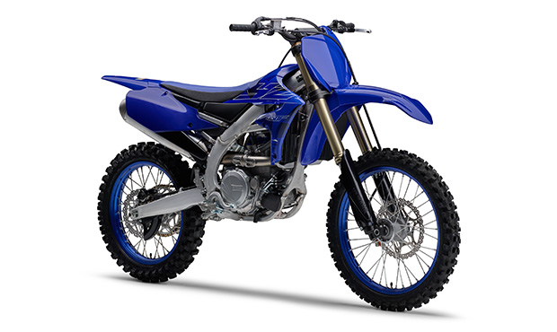
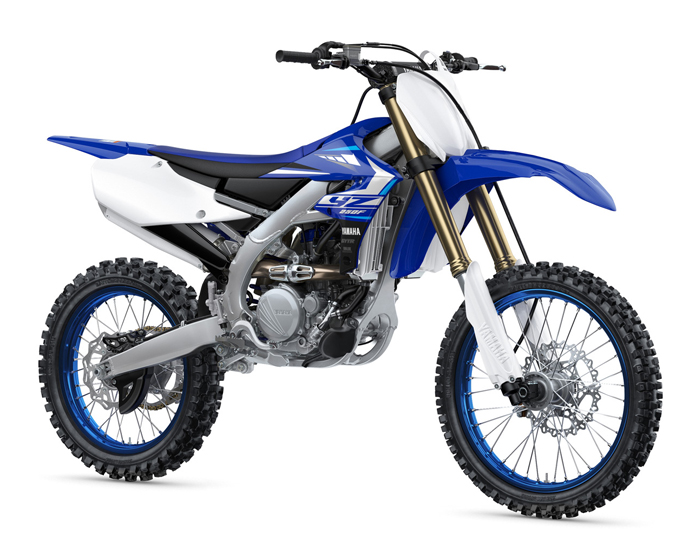
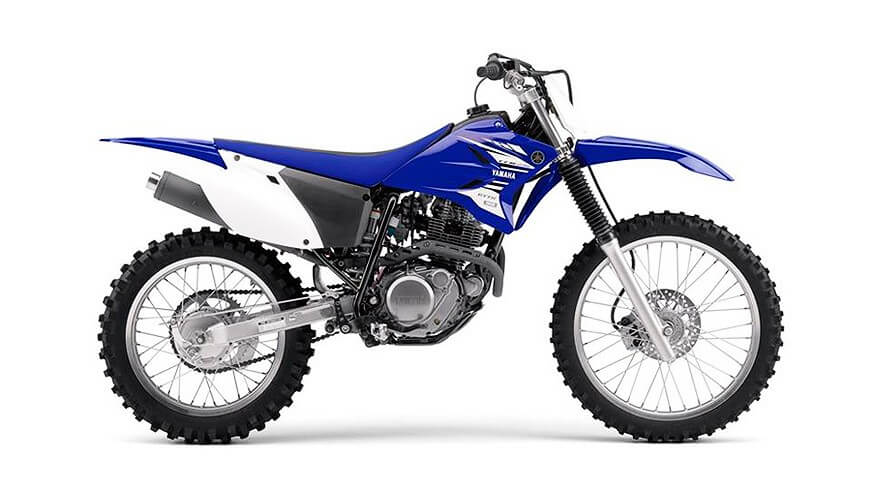
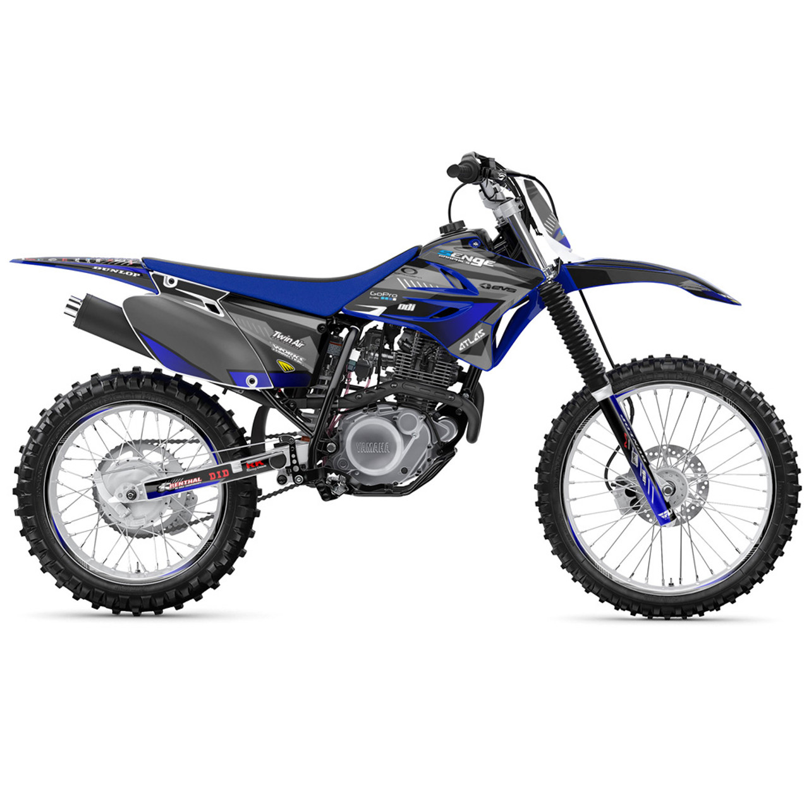
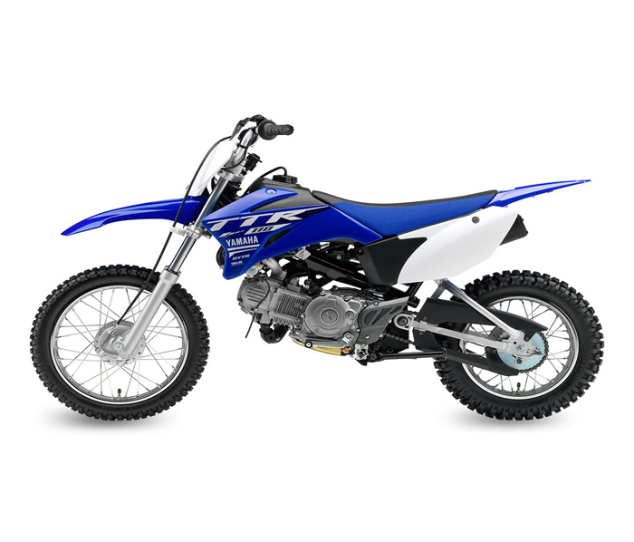

Entre todas las experiencias extremas que las motos te pueden dar, el motocross es una de las más divertidas e impactantes, pues desde su aparición nos ha contagiado de adrenalina.
Sus Origenes
El Motocross es una disciplina del motociclismo que consiste en realizar una serie de pruebas con la motocicleta sobre circuitos todoterreno cerrados o libres cuyo rastro se remonta hasta el Cross Country, una carrera a campo traviesa realizada a pie o a caballo que consistía en recorrer senderos y rutas alternativas en este tipo de terrenos complicados. Tras la aparición de las motos y el auge que tuvieron en el mundo, su uso se diversificó, convirtiéndose en una modalidad de esta actividad y adquiriendo el término de Motocross.
Modelos Yz y TTR
Serie YZ
Las Yamaha YZ son sinónimo de competición y rendimiento en motocross.
■ YZ450F
■ YZ250F
■ YZ250F (2 tiempos)

Serie TTR
Las Yamaha TTR ofrecen diversión y fiabilidad para riders de todas las edades.
■ TTR230
■ TTR125LE
■ TTR110E
Yamaha Yz
Motores potentes, suspensiones ajustables y chasis ligeros para máximo rendimiento en competición.
YZ450F:
Motor: 4 tiempos, enfriado por líquido, DOHC, monocilíndrico
Cilindrada: 450 cc
Transmisión: 5 Velocidades, engrane constante, cadena
YZ250F:
Motor: 4 Tiempos, DOHC
Cilindrada: 250 cc
Transmisión Final: Cadena Velocidades 5 velocidades
YZ250F 2 tiempos:
Motor: Monocilíndrico, 2 tiempos, 2 válvulas, refrigerado por líquido
Cilindrada: 249 cc
Transmisión Final: Cadena Velocidades 5 velocidades
Yamaha TTR
Arranque eléctrico, transmisión suave y asiento bajo para facilitar el aprendizaje y la diversión en trail.
TTR230
Motor: Monocilíndrico, 4T, SOHC
Cilindrada: 223 cc
Transmisión Final: Banda Toma constante, 6 velocidades
TTR125LE
Motor: Air-cooled, 4-stroke, SOHC, 2-valve
Cilindrada: 124 cc
Transmisión Final: Constant mesh 5-speed
TTR110E
Motor: 4 tiempos, refrigerado por aire, SOHC
Cilindrada: 110 cc
Transmisión Final: 4 velocidades, engrane constante